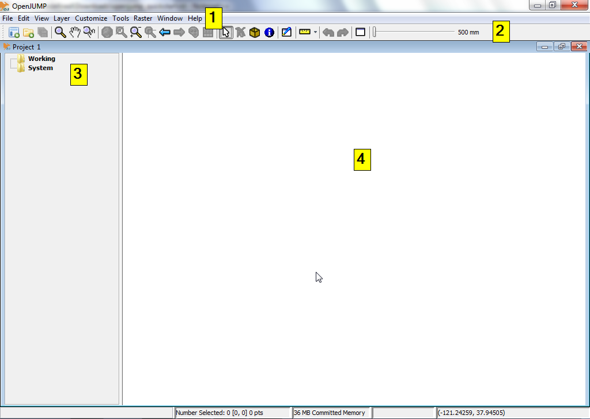

Guia d’inici ràpid amb OpenJUMP¶
OpenJUMP és un SIG d’escriptori que permet fàcilment editar i visualitzar dades SIG vectorials. Ofereix suport limitat a la visualització de dades raster.
Aquesta guia d’inici ràpid descriu com:
- Obrir un arxiu shapefile amb OpenJUMP.
- Modificar les propietats de l’arxiu per visualitzar-lo millor.
- Editar les geometries de la capa.
Començant amb OpenJUMP¶
OSGeo Live-DVD: feu doble-clic en l’enllaç OpenJUMP en l’escriptori o executi /usr/bin/openjump
Indicacions generals: Per començar amb OpenJUMP en Windows, aneu a la carpeta bin i feu doble-clic sobre openjump.exe o openjump.bat. Per Linux, executeu oj_linux.sh des d’un terminal. Per MacOSX, feu clic en el simbol de l’aplicació OpenJUMP.
(Observació important: per executar OpenJUMP és necessari el runtime de Java. Es pot descarregar des del següent enllaç: http://java.com/en/download/index.jsp)
Descripció bàsica de la interfície d’usuari¶
La interfície d’usuari d’OpenJUMP té els quatre (4) components bàsics que té qualssevol altre GIS d’escriptori. (i) El primer és la barra superior de menú. (ii) El segon és la barra principal d’eines que està just a sota de la barra de menús. (iii) El tercer és una vista en arbre a l’esquerra que mostra el llistat de les capes d’informació existents en el projecte actiu. (iv) El quart element és la vista de les capes. Aquesta és la finestra en la que es mostra la representació gràfica de les dades espacials de cada capa. Cadascuna de les llistes de capes i la seva vista corresponent estan contingudes de manera conjunta en un projecte. Cada sessió d’OpenJUMP pot contenir diversos projectes alhora. En aquesta guia d’inici ràpid, treballarem amb un únic projecte o dit d’una altra manera: amb una única finestra.
{kind=link}
Obrir un arxiu Shapefile d’ESRI¶
En aquesta secció s’explica com obrir un arxiu shapefile en OpenJUMP.
A la barra de menú superior en OpenJump seleccioneu el menú [Arxiu]. A continuació, seleccioneu l’opció [Obrir arxiu ...]. Això li presentarà un quadre de diàleg que permet obrir fitxers que continguin dades geoespacials. En el nostre exemple, buscarem un arxiu en format shapefile d’ESRI. Busqueu un arxiu amb l’extensió .shp. Seleccioneu el fitxer i feu clic al botó d’obrir en al quadre de diàleg. Després d’uns moments, es veuran les dades del shapefile a la vista de Capes. També veurà un nova capa creada per aquestes dades a la llista de capes. El nom de la capa coincidirà el nom del shapefile.

Una altra opció més ràpida és arrossegar i deixar anar directament el shapefile a la Layer View.
Aplicar estils a una capa de dades¶
Aquesta secció explica breument com aplicar estils a les dades d’una capa.
En la Llista de Capes, feu clic amb el botó dret sobre el nombre de la capa seleccionada. S’obrirà un arxiu de menú. Seleccioneu l’opció [Change Styles] en el menú [Style]. Aquesta opció té cinc (5) tabs per tal de modificar l’aspecte amb què es mostraran les dades de la capa: canviar el color del contorn, el color d’emplenament, la transparència, afegir etiquetes i definir les escales mínima i màxima en les que les dades seran visibles.
- Per tal d’accedir a aquest menú en MacOSX cal que feu clic sobre Apple


Editar les geometries d’una capa¶
En la Llista de Capes, un cop seleccionada una capa feu clic amb el botó dret. S’obrirà un arxiu de menú. Seleccioneu l’opció anomenada “Editable” en el menú Editable. Això ens obrirà una nova barra d’eines sobre la visor de capes. Aquesta nova barra d’eines té un conjunt de botons que podem usar per editar les geometries.


Anem a provar de fer una edició ràpida. El nostre objectiu serà seleccionar una geometria i intentar moure un punt d’aquesta geometria. Per fer això, primer farem clic sobre el botó que mostra la icona d’un ratolí sobre el menú d’edició. Seleccionarem una única geometria en el visor [Layer View]. Hauria de canviar a color groc i mostrar petits quadrats de color groc en cadascun dels vèrtexs de la figura.

A continuació, feu clic sobre el botó que mostra una creu blava amb un quadrat groc en el mig, Move Vertex Tool (Si passeu el ratolí per damunt d’aquests botons tindreu una descripció de la seva funcionalitat). Ara, si ens situem damunt del visor de les dades, s’hauria de veure com el cursor del ratolí canvia de a una petita creu negra.

Intenteu usar-lo per tal de moure un vèrtex de la geometria seleccionada.

Altres recursos per aprendre a treballar amb OpenJUMP¶
Aquesta és una breu introducció a l’ús d’OpenJUMP. Hi ha molta més informació i molt més material amb què treballar i descobrir les seves funcionalitats.
Podeu descarregar tutorials d’OpenJUMP aquí: http://sourceforge.net/projects/jump-pilot/files/Documentation/
Podeu consultar el wiki d’OpenJUMP aquí: http://sourceforge.net/apps/mediawiki/jump-pilot/index.php?title=Main_Page
I també podeu consultar les llistes d’usuaris: http://groups.google.com/group/openjump-users